Alternator Testing With the GR8 Alternator/Starter Tester (AST)
Alternator Testing With the GR8 Alternator/Starter Tester (AST)
Applies To: 2005-12 Models - ALL
The content of this article/image reflects the changes identified in TSB 12-002
(Replaces 10-033, Service Manual Update: Alternator Testing, dated January 12, 2012)
ALTERNATOR TEST
1. Ask the customer to describe the events that led up to the problem. Many charging system complaints are caused by leaving the headlights or interior lights on, headlight flicker (a normal condition), or installing aftermarket accessories with a high parasitic draw that drains the battery.
2. Visually inspect the alternator and battery cables and grounding straps to confirm that the connections are clean and tight. If there are any damaged parts or loose connections, repair them as needed.
3. Place the GR8 AST by the driver's side front tire.
NOTE: Make sure the engine is at normal operating temperature before testing. If not, hold the engine speed at 3,000 rpm in Park (P) or Neutral (N) until the radiator fan comes on twice, then let it idle.
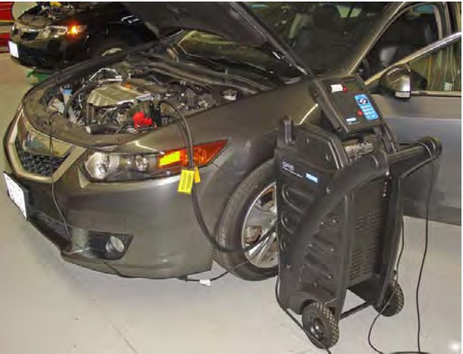
4. With the engine OFF, turn the GR8 ON, and connect it to the vehicle:
- Connect the negative (-) lead to the negative battery terminal.
- Connect the positive (+) lead to the positive battery terminal.
5. In the main menu, scroll over to the SYSTEM icon, and press the SELECT key.
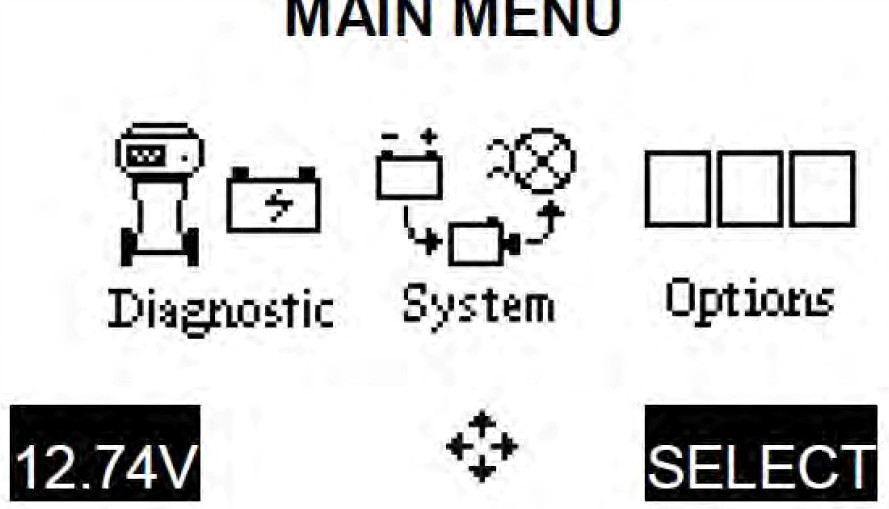
6. Use the arrow or numerical keys to select TECHNICIAN ID, and press NEXT to continue.
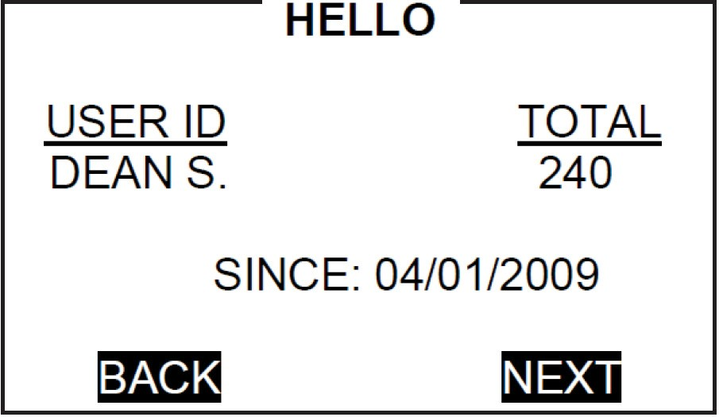
7. Select the type of vehicle being tested.
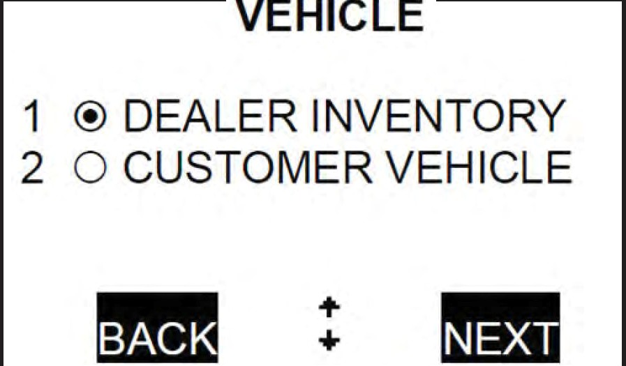
8. When prompted, verify that the test cables and clamps are in good working order, and press NEXT to continue.
9. Scroll up or down to select the model year of the vehicle being tested, and press NEXT to continue.
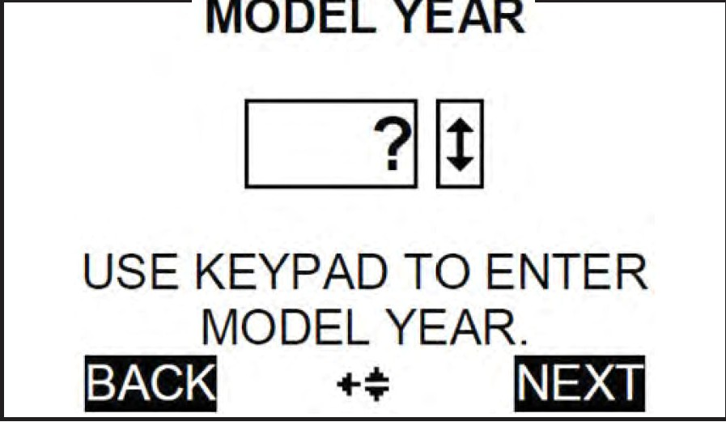
10. Select Acura for the vehicle being tested, and press NEXT to continue.
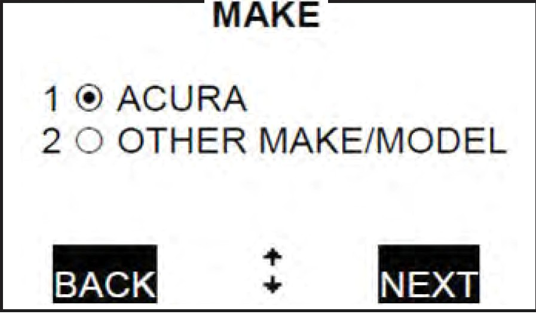
11. Scroll through the list and select the Acura MODEL/ENGINE you are testing, and press NEXT to continue.
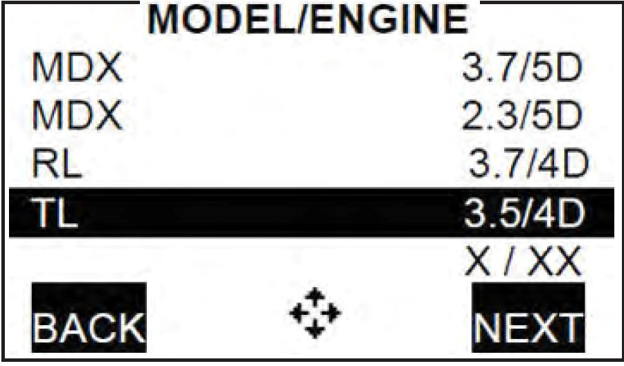
12. Enter the battery's CCA, and press NEXT to begin the battery testing.
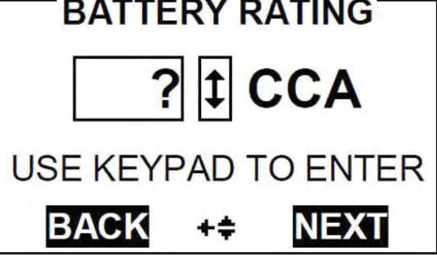
13. Wait until the initial battery testing is complete.
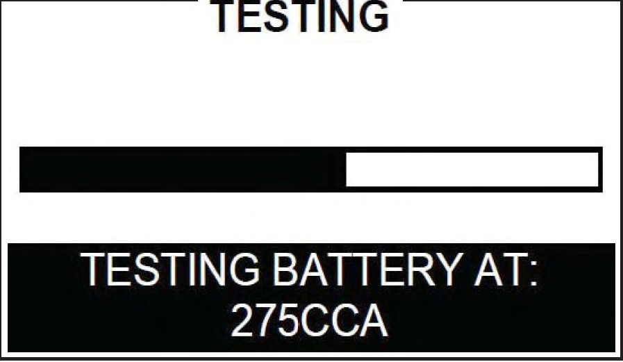
14. Zero the amp clamp following the on-screen instructions, making sure the clamp jaws are completely closed during the procedure.
15. Place the clamp around the positive (+) alternator cable within 3" of the alternator. This will be simple on most models, but on some it may be necessary to be further than 3" away due to obstructions or tight spaces.
NOTE:
- Testing is done at the B+ cable to help rule out other factors in the vehicle's charging system and to increase testing accuracy.
- Make sure the amp clamp is clear of any moving engine parts.
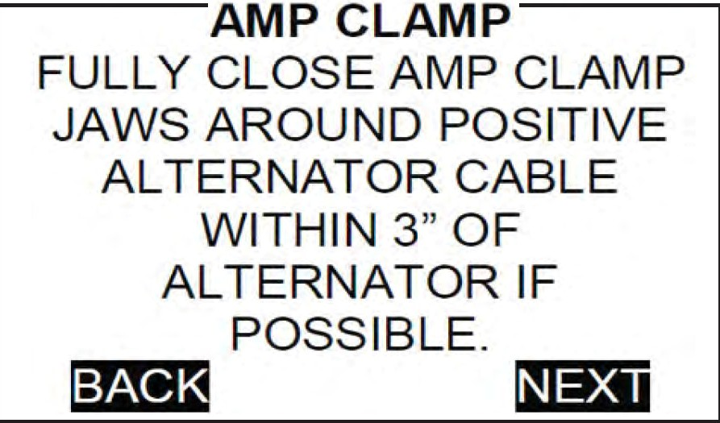
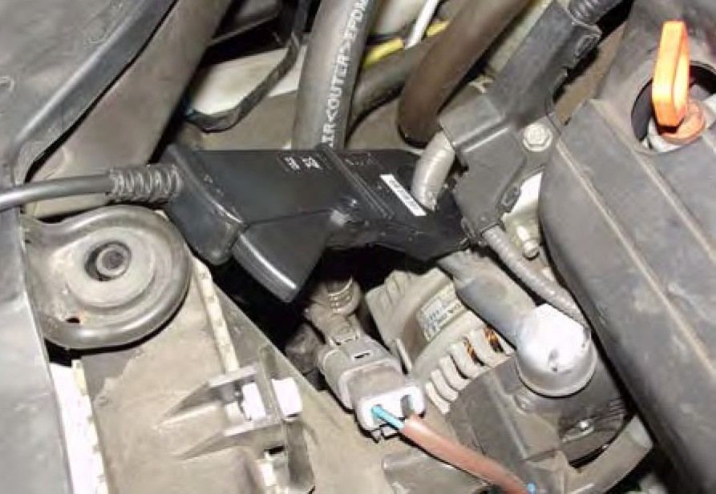
16. Remove the control module from the top of the GR8, and take it into the vehicle. Press NEXT to continue.
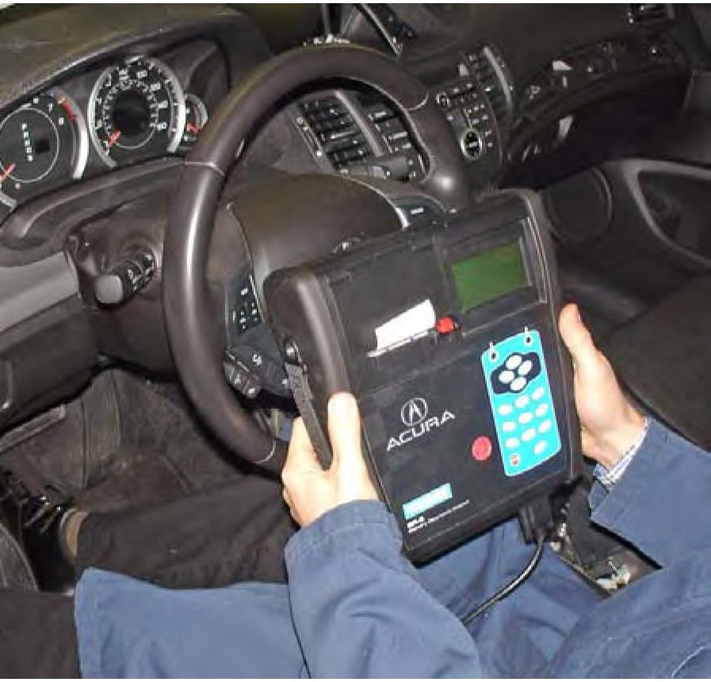
17. When prompted, turn the ignition switch to ON (I). Make sure all electrical loads are off at this time.
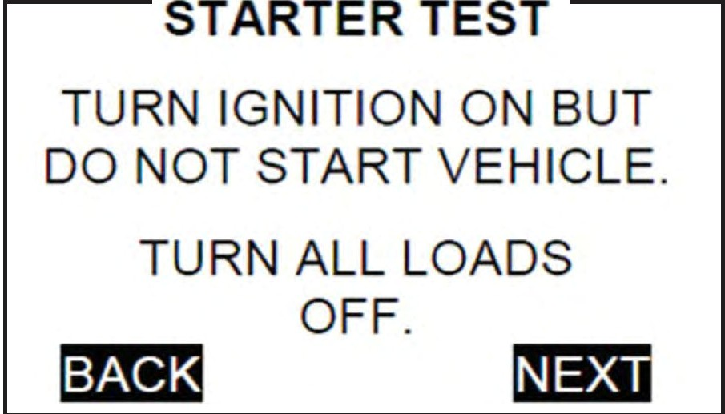
18. Start the engine, and follow the prompts on the next few screens.
19. When prompted, rev the engine to 3,000-3,500 rpm until the tester tells you to HOLD the rpm level.
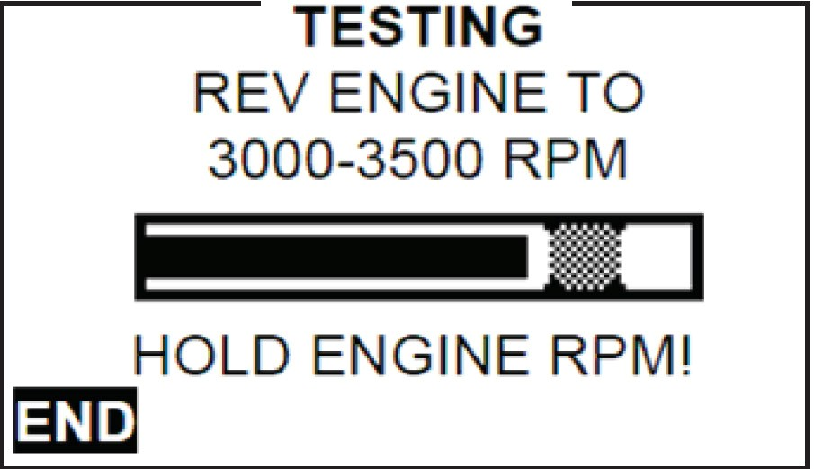
NOTE: If you do not rev the vehicle within the first 10 seconds, or the tool cannot detect the engine speed, you will have to rev the engine to 3,000-3,500 rpm, hold at that rpm level, and hit NEXT to continue.
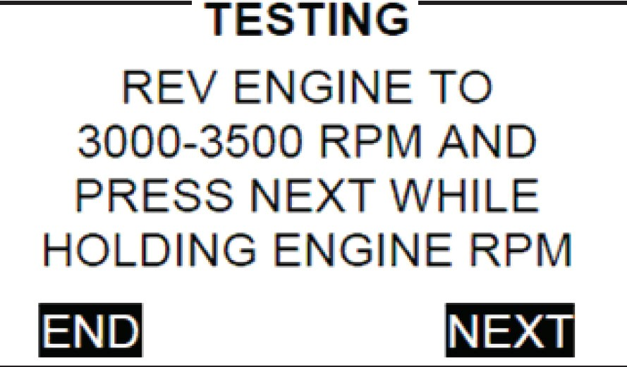
20. While holding the rpm level, the tester will acquire data. Continue to closely follow the prompts until the test is complete.
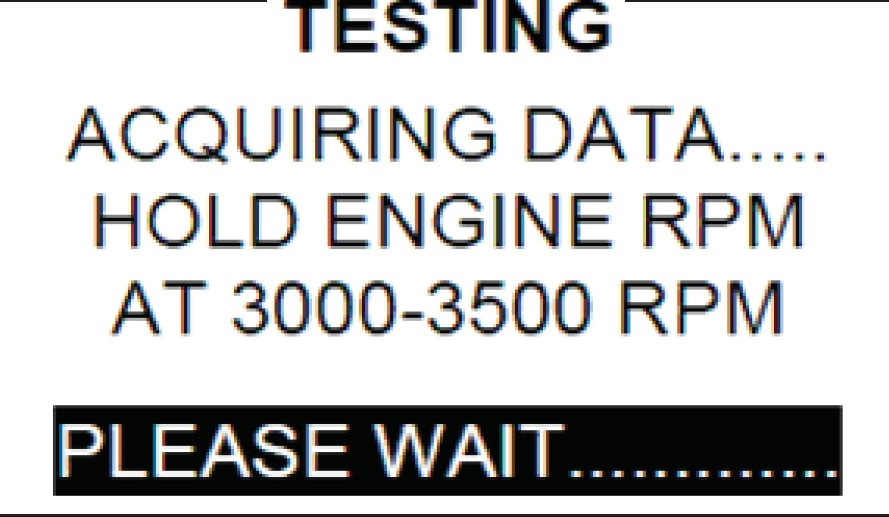
21. Turn the ignition switch to LOCK (0), and press NEXT to continue.
22. Place the GR8 control module back on the GR8, and press NEXT to display the results.
23. Press PRINT to print the results.
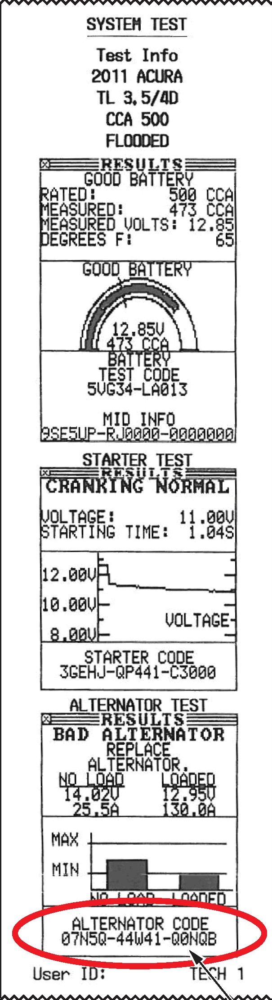
15-DIGIT TEST CODE.s